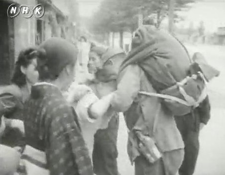

福島県森江野村に二歳の長男を連れて私は疎開して居た。 正午に重大ニュースがある、と言うので我が家のラジオを聞きに近所の農家のおじさん達が十五、六人集まった。 二十人も入ればいっぱいになるせまい家で、「耐えがたきを耐え、忍び難きを忍び,…」 玉音放送も電波の状態が悪く、はっきりしない処がある。 放送が終り反芻(はんすう)して、アーア、これで戦争はもうないんだワ、と思った時、嬉しさより気抜けした方が大きかった。 でも東京へ帰れる、と思った喜びは何よりも大きく心が弾んだ。
八月下旬、様子を見に行くと言って転出証明を持って帰京した。
東京工大在学中の弟のために母が家を借りていたので、役所に行き転入手続きをした。 九月一日から東京は他府県からの転入不可となり、東京に住居を持つことは出来なくなったのである。
子供を連れて池袋駅に着いた時、何もない一面の焼野原、処々に金庫がポッン、ポッンと立っているのに呆然とし、恐くてバスに乗れず子供の手をひいて四十分の道を地図を頼りに家まで歩いた。 そして二人の弟と長男、私の四人の生活が始まった。
千川のはずれで、家の裏には川が流れている良い環境であった。 ガスは毎朝六時から八時頃まで二時間しか出なかった。 風呂も炊事もまきでやり七輪は家財道具であった。
子供を連れて上野公園に行くと復員軍人が闇屋からとり上げた、和菓子、果物、ビスケット等を当時の公定値で売り行列が出来ていたが子連れの者には向こうから声をかけてくれ優先的に売ってくれた。 まんじゅう一個が五銭であった。
有楽町に行けば米兵が「ヘーイ、ボーイ」と言ってチョコレートを手渡してくれる。 子供は恐がって私の後にかくれた。
二十一年二月十一日第一回の南方からの引揚船、長嵐丸が広島県大竹港に入港し、夫はマラッカから帰還した。
マラッカの日本ホテルの支配人として単身赴任していたのである。
復員し私達は旧の生活にもどった。
平成元年祖父母の九十年忌を姉妹弟達と伊達郡の万蔵寺で縁のある人達を招んで供養した。 その帰り疎開地を尋ねた。
五十年前、私達の人借りていた家は跡かたもなくリンゴ園になり、当時十代だった息子(忠雄)さんが今は孫のいる存在になった。 お世話になったご両親、親切に面倒をみてくれた弟さん夫婦、石屋のおじさん達、知って居る人達皆あの世に逝き、今家を守っている人達は私の知らない人達が中心で話をしても通じない。
忠雄さんがとても喜んで下さり奥さんともども懐かしがり、此処をリンゴ園にしたのは十年前、家も建て替え水道も引いて井戸はあるけど炊事には使わない、との事であった。
お風呂の水を川からバケツで運び、茶碗を溜池で洗っていた生活は大きくさま変りし若いお嫁さんは赤いスクーターを乗り回している。
飯塚温泉に行くと言う私達に自慢のリンゴを沢山下さり翌日食べたリンゴの何と美味しかつたこと、忘れられない。
復員と引き揚げ「復員」とは、戦争で海外に派遣されていた兵士や軍人が日本に帰国することを指します。 一方、「引き揚げ」は、戦争から帰れなくなっていた一般の人々や難民を日本に戻すことを言います。 帰国にはさまざまな困難や苦労が伴いました。
引用:○○とは？【とはログ】 「復員」とは？戦後の日本…
復員軍人

戦争が終わると、兵隊となっていた約７００万の人々が「復員」して家族のもとに帰ってきました。
海外からの復員が完了するには３年近くかかりました。
引用:NHK for School「復員軍人」